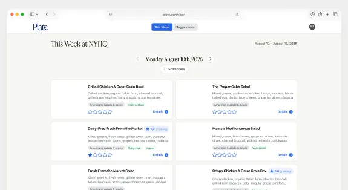

Plate
A weekly menu app that turns an office lunch program into something people actually look forward to reading.
Context
Every week an office kitchen publishes its menu — and every week it lands as a flat, forgettable list. Plate reimagines that menu as a clean, scannable weekly spread people genuinely enjoy browsing before they decide what to eat.

Problem
Menus were shared as dense documents that buried the good stuff: what's fresh, what's new, and what fits a dietary need. Finding the one dish you cared about meant reading the whole thing.
Role & Approach
A personal project — I designed and built Plate end to end, from the weekly layout to the typography and the way dishes, tags, and ratings come together on a single page.
Process
I started from how people actually skim a menu: by day, by craving, by dietary tag. I designed a weekly grid that groups dishes by meal and surfaces tags and ratings inline, then iterated on type and spacing until a full week read comfortably at a glance.
User Journey
Someone opens Plate at the start of the week and sees the whole spread — each day's dishes, dietary tags, and ratings — scanning straight to what they want without wading through a document.
Constraints
The content changes every week and varies wildly in length, so the layout had to stay elegant whether a day had two dishes or a dozen — and remain readable on a phone glanced at in a lunch line.
Summary
Plate turns a weekly office menu into a designed, scannable experience — making it faster to find the right dish and, honestly, more fun to read.
Next Steps
Ongoing side project. Next up: personal favorites and dietary filters, plus a lightweight way for the kitchen to publish each week directly.